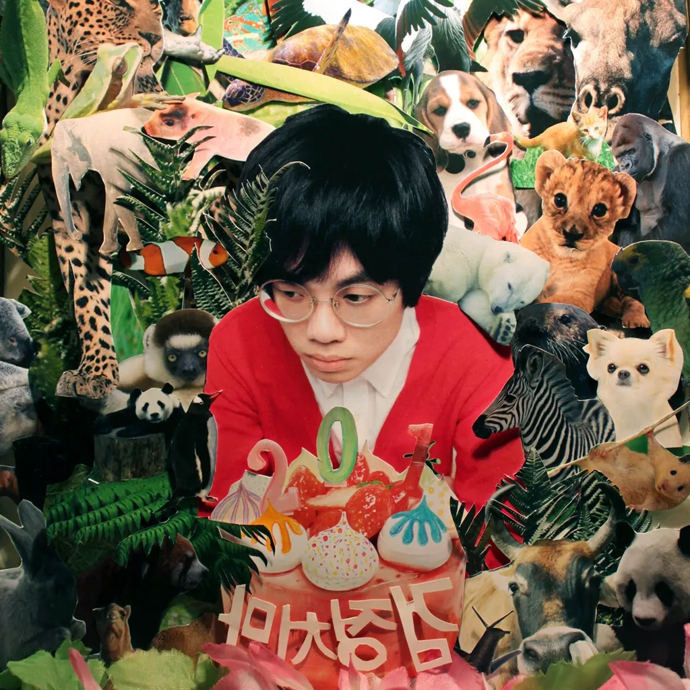
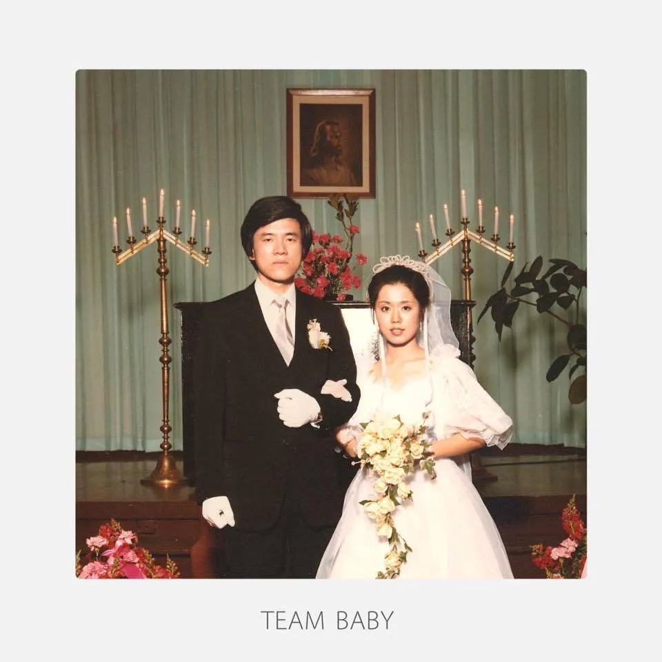
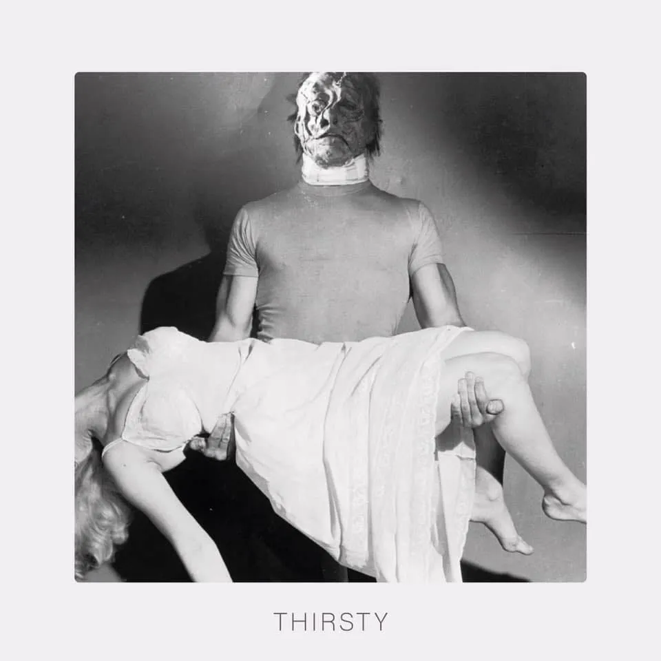
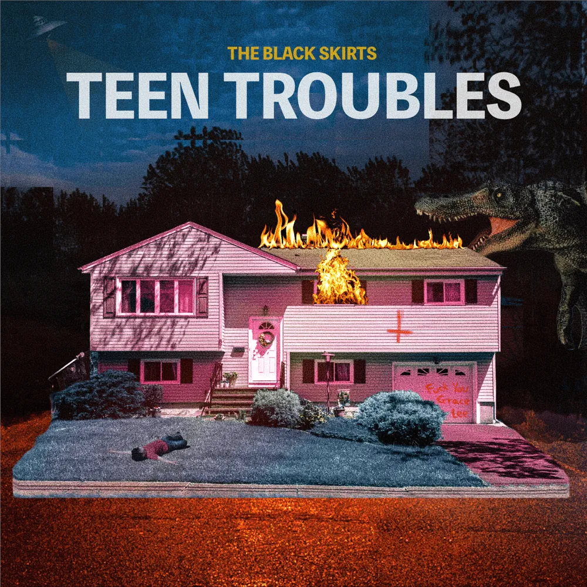

정규1집:201

거친 비주류 노선에서 모두를 홀린 디테일
'뉴욕펑크의 자유분방함과 달콤한 모던록의 멜로디 그리고 21세기 록 음악의 현재까지 고스란히 그리다.'
정규3집 part1: TEAM BABY

"이 앨범에서는 사랑, 그리고 보고 있어도 보고 싶어지는 그리움을 노래했다.
지금 사랑을 하고 있는 당신과, 그런 당신의 편에 서있는 사람을 위한 앨범이다."
정규3집 part2: THIRSTY

' 뭘 기대하는지 알아 어디서 들어봤겠지
넌 근데 잘못 온 거야 여긴 춤과 눈물에 순서가 없는 걸 ' - Bollywood
뻔뻔하고 그로테스크한 앨범을 만들고 싶었다.
그럼에도 나에겐 하나같이 다 어쩔 수 없는 사랑 노래처럼 들린다.
하긴, 전부 다 내가 지어낸 얘기라고 해도 영원히 알 순 없겠지.
정규3집 part3: TEEN TROUBLES

'앙상하게 꿈을 꾸었지, 담담하게 녹슬었네.
떠나야 할 시간이 지난, 너는 그냥 흐린 메아리야'
-Cicadas (매미들)
Teen Troubles는 '99년도로 보내는 러브 레터입니다. 빨갛게 치켜뜬 눈으로 뜨거운 여름 햇살을 받아내며 방황하던 어린 시절. 지나고 보니 평범한 건 하나도 없었고, 내 마음도 떠난 적이 없습니다.
-조휴일